01
33%
of surveyed students participated in physical activities at university.


PROJECT
Wego
Wego is a mobile app concept that helps university students connect through shared interests and find companions to attend campus events together. By bringing event discovery and social connection into one experience, WEGO aims to reduce hesitation and encourage participation.
While universities offer a wide range of activities, discovering something interesting does not necessarily mean students will attend. Beyond access to information, practical and social barriers can influence participation.
01
of surveyed students participated in physical activities at university.
02
of non-university physical activity participants said having friends or family participate would encourage them to join.
03
Our interviews also highlighted concerns around attending unfamiliar activities alone, suggesting an opportunity to support participation through companionship and shared interests.
THE DESIGN CHALLENGE
The project evolved through two iterative design cycles.
01
Investigated student experiences through stakeholder research, interviews, early design ideas, and prototypes.
Research · Interviews · Early Prototypes
02
Developed the main design concept, created interactive prototypes, and refined the experience through user-based evaluation.
Wireframes · Detailed Prototype · Evaluation
01 TRUST & SAFETY DESIGN
Introduced university student verification to create a more trusted environment for connecting with peers. By restricting access to verified students, the design aims to reduce uncertainty and encourage safer social interactions.
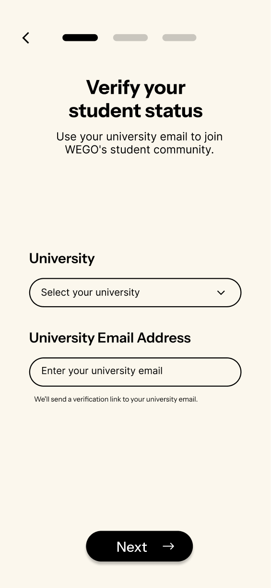
02 CONNECTION INTERACTION
Designed a connection experience that allows students to discover potential companions, express interest, and initiate conversations before attending an event together.
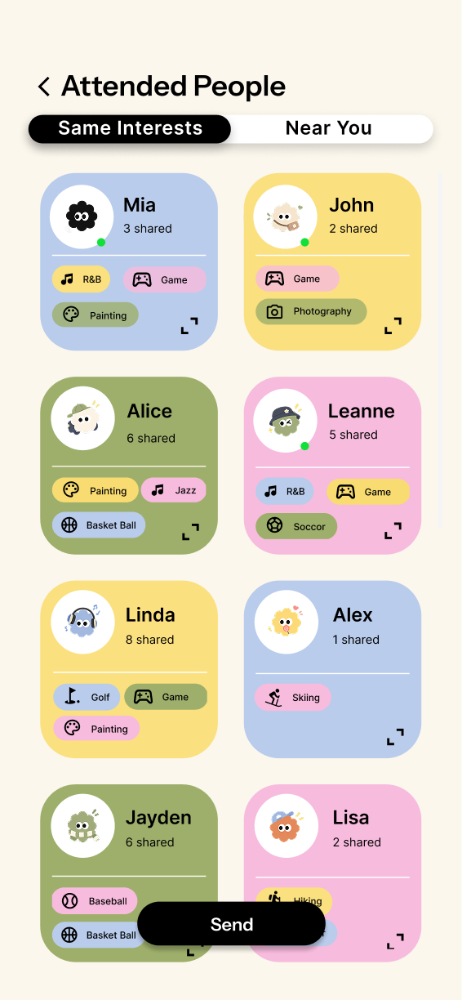
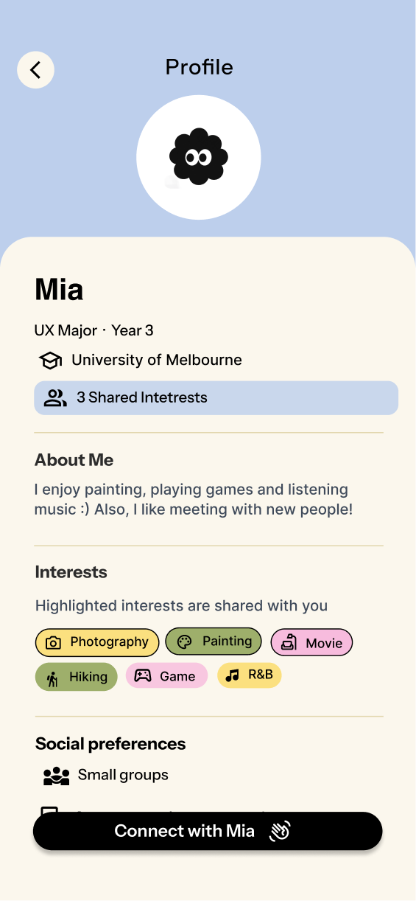
03 ICEBREAKER INTERACTION
Integrated optional icebreaker activities into the chat experience, offering students a playful and low-pressure way to start conversations with unfamiliar peers.
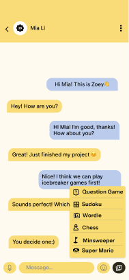
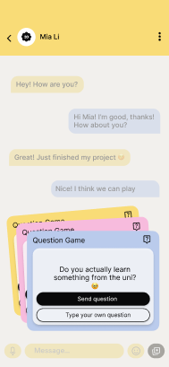
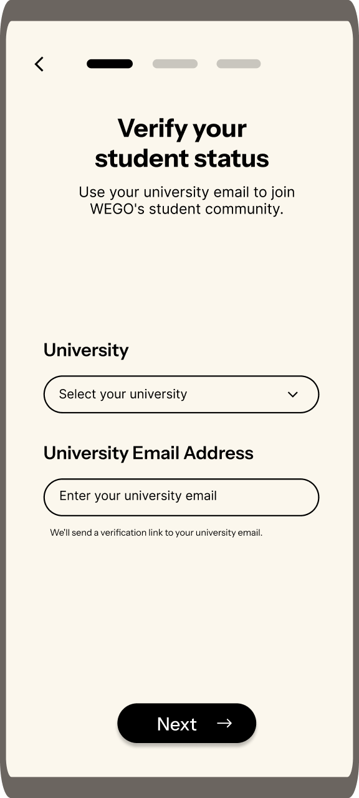
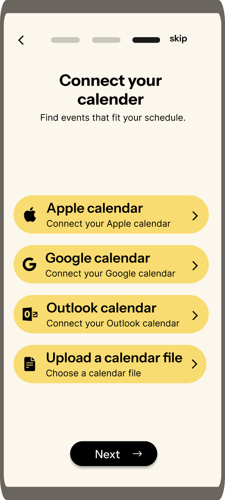
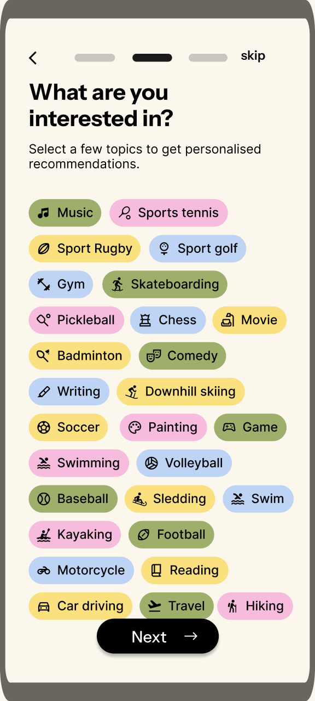
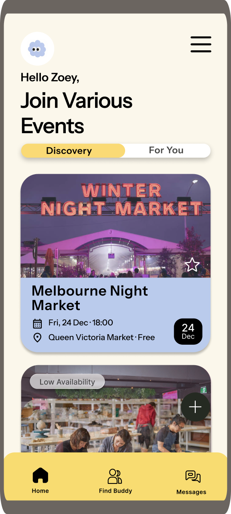
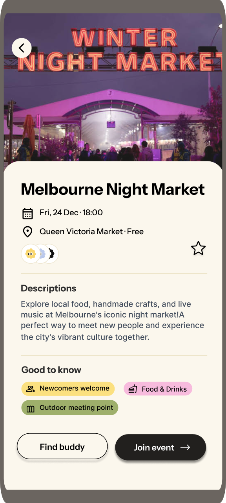
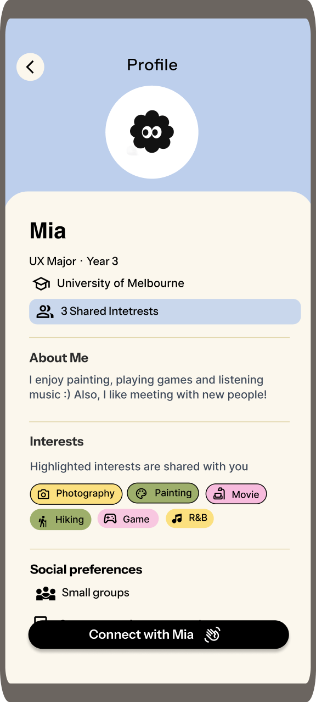
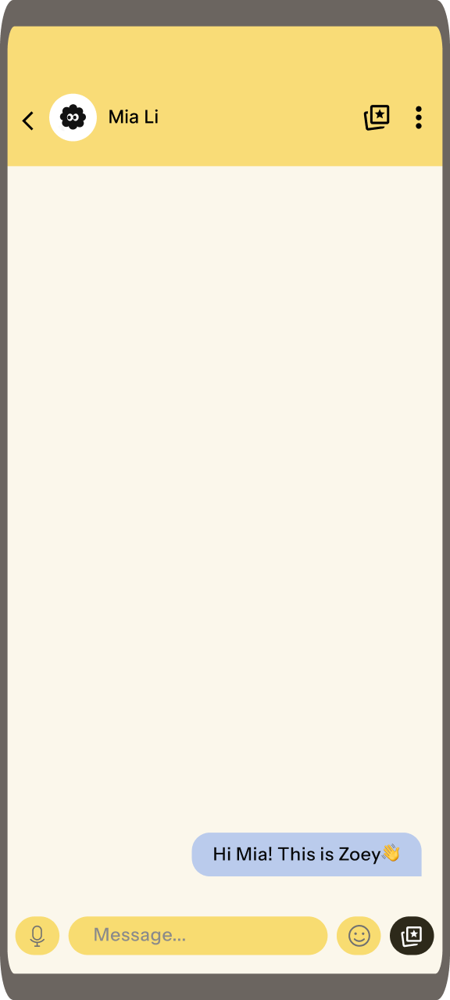
WHAT I LEARNED
WEGO helped me understand that good design starts with identifying the right problem, rather than simply creating features or interfaces. Through research and iteration, our focus shifted from helping students discover events to understanding what might prevent them from attending. I learned to question the purpose behind design decisions and translate user needs into meaningful interactions.